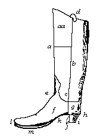
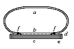

Encyclopedia Britannica, 11th ed. (1910) v. XXIV pp. 992-994
SHOE (a word appearing in the Teutonic
languages in various forms, as Ger. Schuh, Swed. and Dan. sko, sometimes
supposed to come from an unknown root ska or sku, cover), a covering for the
foot. The simplest foot-protector is the sandal, which consists of a sole
attached to the foot, usually by leather thongs. The use of this can be traced
back to a very early period; and the sandal of plaited grass, palm fronds,
leather or other material still continues to be the most common foot-covering
among oriental races. Where climate demanded greater protection for the foot,
the primitive races shaped a rude shoe out of a single piece of untanned hide;
this was laced with a thong, and so made a complete covering. Out of these two
elements --
sole without upper and upper without sole�arose the perfected shoe and boot,
consisting of a combination of both. The boot
proper differs from the shoe in reaching up to the knee, as exemplified by such
forms as jack-boots, top-boots, Hessian boots and Wellington boots, but the term
is in England now commonly applied to �half-boots� or �ankle-boots� which reach
only above the ankle. A collection illustrating the numerous forms and varieties
of foot-covering, formed by Jules Jacquemart, is in the Cluny Museum in Paris.
Wooden Shoes.�The simplest foot-covering, largely used
throughout Europe, is the wooden shoe (sabot) made from a single piece of
wood roughly cut into shoe form. Analogous to this is the clog of the midland
counties of England. Clogs, known also as pattens, are wooden soles to which
shoe or boat uppers are attached. Sole and heel are made of one piece from a
block of maple or ash 2 in. thick, and a little longer and broader than the
desired size of shoe. The outer side of the sole and heel is fashioned with a
long chisel-edged implement, called the dagger�s knife or stack; a second
implement, called the groover, makes a groove about one-eighth of an inch deep
and wide round the side of the sole; and by means of a hollower the contour of
the inner face of the sole is adapted to the shape of the foot. The uppers of
heavy leather, machine sewed or riveted, are fitted closely to the groove around
the sole, and a thin piece of leather-binding is nailed on all round the edges,
the nails being placed very close, so as to give a firm durable fastening. These
clogs are of great advantage to all who work in damp sloppy places, keeping the
feet dry and comfortable in a manner impossible with either feather or india-rubber.
They are consequently largely used on the continent of Europe by agricultural
and forest labourers, and in England and the United States by dyers, bleachers,
tanners, workers in sugar-factories, chemical works, provision packing
warehouses, &c. There is also a considerable demand for expensive clogs, with
finely trimmed soles and fancy uppers, for use by clog-dancers on the stage.
Manufacture of Leather
Shoes.�There are two main divisions of work comprised in ordinary
shoemaking. The minor division� the making of "turn shoes"�embraces all work in
which there is only one thin flexible sole, which is sewed to the upper while
outside in and turned over when completed. Slippers and ladies� thin house boots
are examples of this class of work. In the other division the upper is united to
an insole and at least one outsole, with a raised heel. In this are comprised
all classes, shapes and qualities of goads, from shoes up to long-top or riding
boots which reach to the knee, with all their variations of lacing, buttoning,
elastic-web
side gussets, &c. The accompanying cuts (figs. 1 and 2) show the parts and trade
names of a boot.
|
 |
|
| FIG 1. � Parts of a Boot | |
| aa, | The extension. |
| a, | The front. |
| b, | The side seam. |
| c, | The back. |
| d, | The strap. |
| e, | The instep. |
| f, | The vamp or front. |
| g, | The quarter or counter. |
| h, | The rand. |
| i, | The heel � the front is the breast, the bottom the face. |
| j, | The lifts of the heel |
| k, | The shank or waist. |
| l, | The welt. |
| m, | The sole. |
Shoemaking was formerly a pure handicraft; but now machinery effects almost every operation in the art. On the factory system all human feet are treated alike; in the handicraft, the shoemaker deals with the individual foot, and he should produce a boot which for fit, comfort, flexibility and strength cannot be approached by the product of machinery.
The shoemaker after
measuring the feet, cuts out upper leather according to the size and pattern.
These parts are fitted and stitched together by the "boot-closers," but little
of this closing is now done by hand. The sole "stuff" is next cut out and
assembled, consisting of a pair of inner soles of soft leather, a pair of outer
soles of firmer texture, a pair of welts or bands about 1 in. broad, of flexible
leather, and lifts and top-pieces for the heels. These the "maker" mellows by
steeping in water. He attaches the insoles to the bottom of a pair of wooden
lasts, which are blocks the form and size of the boots to be made, fastens the
leather down with lasting tacks, and, when it is dried, draws it out with
pincers till it takes the exact form of the last bottom. Then he "rounds the
soles," by paring down the edges close to the last, and forms round these edges
a small channel or feather cut about one-eighth of an inch in the leather. Next
he pierces the insoles all round with a bent awl, which bites into, but not
through, the leather, and comes out at the channel or feather. The boots are
then "lasted," by placing the uppers on the lasts, drawing their edges tightly
round the edge of the insoles, and fastening them in position with lasting
tacks. Lasting is a crucial operation, for, unless the upper is drawn smoothly
and equally over the last, leaving neither crease nor wrinkle, the form of the
boot will be bad. The welt, having one edge pared or chamfered, is put in
position round the sides, up to the heel or "seat," and the maker proceeds to
"inseam," by passing his awl through the holes already made in the insole,
catching with it the edge of the upper and the thin edge of the welt, and sewing
all three together in one flat seam, with a waxed thread. He then pares off
inequalities and "levels the bottoms," by filling up the depressed part in the
centre with a piece of tarred felt; and, that done, the boots are ready for the
outsoles. After the leather for them has been thoroughly compressed by hammering
on the "lap-stone," they are fastened through the insole with steel tacks, their
sides are pared, and a narrow channel is cut round their edges; and through this
channel they are stitched to the welt, about twelve stitches of strong waxed
thread being made to the inch.
|
 |
|
| FIG 2. � Section of Boot | |
| a, | The upper.. |
| b, | The insole. |
| c, | The outsole. |
| d, | The welt. |
| e, | The stitching of the sole to the welt. |
| f, | The stitching of the upper to the welt. |
The soles are now hammered
into shape; the heel lifts are put on and attached with wooden pegs then sewed
through the stitches of the insole; and the top-pieces, similar to the outsoles,
are put on and nailed down to the lifts. The finishing operations embrace
pinning up the edge of the heel, paring, rasping, scraping, smoothing, blacking
and burnishing the edges of soles and heels, scraping, sandpapering and
burnishing the soles, withdrawing the lasts, and cleaning out any pegs which may have pierced through the inner sole. Of
course, there are numerous minor
operations
connected with forwarding and finishing in various materials, such as
punching lace-holes, inserting eyelets, applying heel and toe irons,
hob-nailing, &c. To make a pair of common stout lacing boots occupies an expert
workman from fourteen to eighteen hours.
The principal difficulties to be overcome in applying machinery to shoemaking were encountered in the operation of fastening together the soles and uppers. The first success in this important operation was effected when means other than sewing were devised. In 1809 David Meade Randolph obtained a patent for fastening the soles and heels to the inner soles by means of little nails, brads, sprigs or tacks. The lasts he used were covered at the bottom with plates of metal, and the nails, when driven through the inner soles, were turned and clinched by coming against the metal plates. To fix the soles to the lasts during the operation the metal plates were each perforated with three holes, in which wooden plugs were inserted, and to these the insoles were nailed. This invention may be said to have laid the foundation of machine boot-making. In 1810 M. I. Brunel patented a range of machinery for fastening soles to uppers by means of metallic pins or nails, and the use of screws and staples was patented by Richard Woodman in the same year.
Apart from sewing by machine or hand, three principal methods of attaching soles to uppers have been used. The first is "pegging" with small wooden pins or pegs driven through outsole and insole, catching between them the edges of the upper. The points of the pegs which project through the insole are cut away and smoothed level with the leather either by hand or by a machine pegging rasp. The second is the system of "riveting or clinching" with iron or brass nails, the points of the nails being turned or clinched by coming in contact with the iron last used. The third method, screwing, has come into extensive use since the standard screwing machine was introduced in America by the McKay Sewing-Machine Association, of Boston, Massachusetts, and in Europe by the Blake and Goodyear Company, of London. The standard screw machine, which is an American invention, though the idea was anticipated by a Frenchman named Blanchon in 1856, is provided with a reel of stout screw-threaded brass wire, which by the revolution of the reel is inserted into and screwed through outsole, upper edge and insole. Within the upper a head presses against the insole directly opposite the point of the screw, and the instant screw and head touch the wire is cut level with the outsole. The screw, making its own hole, fits tightly in the leather, and the two soles, being both compressed and screwed firmly together, make a perfectly water-tight and solid shoe. The surface of the insole is quite level and even, and as the work is really screwed, the screws are steady in their position, and they add materially to the durability of the soles. The principal disadvantage in the use of standard screwed sales is the great difficulty met with in removing and levelling down the remains of an old sole when repairs are necessary.
The various forms of sewing-machine by which uppers are closed, and their important modifications for uniting sales and uppers, are also principally of American origin. But the first suggestion of machine sewing was an English idea. The patent secured by Thomas Saint in the English Patent Office in 1790, while it foreshadowed the most important features of the modern sewing-machine, indicated more particularly the devices now adopted in the sewing of leather. After the introduction of the sewing-machine for cloth work its adaptation to stitching leather both with plain thread and with heated waxed thread was a comparatively simple task. The first important step in the more difficult problem of sewing together soles and uppers by a machine was taken in the United States by Lyman R. B lake in 1858. Blake�s machine was ultimately perfected as the McKay sole-sewing machine�one of the most successful and lucrative inventions of modern times. Blake secured his first English patent in 1859, his invention being thus described: "This machine is a chain-stitch sewing-machine. The hooked needle works through a rest or supporting surface of the upper part of a long curved arm which projects upwards from the table of the machine. This arm should have such a form as to be capable of entering a shoe so as to carry the rest into the toe part as well as any other part of the interior of it; it carries at its front end and directly under the rest a looper, which is supported within the end of the arm so as to be capable of rotating or partially rotating round the needle, while the said needle may extend into and through the eye of the looper, such eye being placed in the path of the needle. The thread is led from a bobbin by suitable guides along in the curved arm, thence through a tension spring applied to the arm, and thence upwards through the notch of the looper. The needle carrier extends upwards with a cylindrical block which can be turned round concentrically with it by means of a handle. The feed wheel by which the shoe is moved along the curved arm during the process of sewing is supported by a slider extending downwards from the block, and applied thereto so as to be capable of sliding up and down therein. The shoe is placed on the arm with the sole upwards. The feed wheel is made to rest on the sole." Blake�s original machine was very imperfect and was incapable of sewing round the toe of a shoe but a principal interest in it coming into the hands of Gordon McKay (1821�1903), he in conjunction with Blake effected most important improvements in the mechanism, and they jointly in 1860 procured United States patents which secured to them the monopoly of wholly machine-made boots and shoes for twenty-one years. On the outbreak of the Civil War in America a great demand arose for boots, and, there being simultaneously much labour withdrawn from the market, a profitable field was opened for the use of the machine, which was now capable of sewing a sole right round. Machines were leased out to manufacturers by the McKay Company at a royalty of from 1/2 to 3 cents on every pair of soles sewed, the machines themselves registering the work done. The income of the association from royalties in the United States alone increased from $38,746 in 1863 to $589,973 in 1873, and continued to rise till the main patents expired in 1881, when there were in use in the United States about 1800 Blake�McKay machines sewing 50,000,000 pairs of boots yearly. The monopoly secured by the McKay Company or the time the progress of invention, but still many other sole-sewing machines were patented. Among the most important of these is the Goodyear welt machine�the first mechanism adapted for sewing soles on lasted boots and shoes. This machine originated in a patent obtained in 1862 in the United States by August Destory for a curved. needle machine for sewing outsoles to welts, but was not successful till taken in hand by Charles Goodyear, son of the well- known inventor in indiarubber fabrics. This device was first applied in a machine for sewing turn shoes. Later it was used in a machine which sewed with a chain-stitch from the channel of the insole through the welt and upper, and a little later still it was followed by the "rapid outsole lock-stitch machine," which united the outsole to the welt with lock-stitching. Improvements have been continually effected in the Goodyear system and numerous accessory mechanisms have been brought out, until there is now not a single operation necessary in shoemaking, however insignificant, for which machinery has not been devised. In consequence the range of machines employed in a modern shoe factory is very extensive, the various operations being highly specialized, and there being minute subdivision of labour. Through the fundamental principles were not in all cases of American origin, American inventors were foremost in developing such machinery, and America took the lead in employing it to the supersession of handwork in shoemaking. When English makers, in about the seventh or eighth decade of the 19th century, were forced by the pressure of economic necessity to do the same, they found that the suitable machinery was controlled by American makers, from whom therefore they had to hire it on the payment of royalties and under stringent conditions which rendered it difficult for them to use machines of any other maker, even if available, on pain of the whole plant being stripped from their factories. The British United Shoe Machinery Company, the English branch of the United Shoe Machinery Company, of Boston, Mass., thus maintained a practical monopoly of the supply of shoemaking machinery in Great Britain. However, by the beginning of the 20th century English makers began to assert themselves and to show that they could produce machines able to compete effectively with those from America. The loosening of the American monopoly thus begun was aided by the Patent Act of 1907, section 27 of which provided that a patent may be revoked if the article is not manufactured "to an adequate extent" in Great Britain (most of the shoe machinery in question having been manufactured in America), while section 38 prohibits the insertion in a lease of conditions excluding the lessee from using articles or processes not supplied or owned by the lessor.
Rubber Shoes�The manufacture of indiarubber galoshes,1 shoes,
fishing boots, &c., forms an important branch of the indiarubber industry,
especially in America, where rubber overshoes, colloquially known as "rubbers,"
are extensively worn, and where fully 1000 different shapes and sizes are said to
be produced. So far back as 1833 the Roxbury India Rubber Company was
constituted to work the discovery that indiarubber dissolved in turpentine and
mixed
with lampblack formed a varnish which gave a hard waterproof
surface when applied to leather, but the process failed because the varnish
melted with heat and cracked with cold. This defect was remedied by Charles
Goodyear (1800-1860), who found that when sulphur was combined with the rubber
by the aid of heat the product ("vulcanized rubber") was not only stronger but
retained its elasticity through a wide range of temperature. His patent, taken
out in 1844, was the foundation of various American rubber industries including
that of rubber boots and shoes. Guttapercha has also been used instead of
leather for the outer soles of boots.
1. The galosh or golosh was originally a wooden shoe or clog, but later came to mean an overshoe (cf. R. Holme Armoury, 1688: "Galloshios are false shooes, or covers for shooes"). The word is adapted from the French goloche from Low Lat. galopedium, a wooden shoe. Gr. καλοπόδίον, shoemaker's last, from κάλον, wood, and ποΰς, foot.